Practical shop floor wisdom, deep technical walkthroughs, and zero-nonsense fabrication guides for PhysBox Etch, Volt, and Mesh.
PhysBox Etch Studio 12 Min Read Level: Beginner
A Beginner's Guide To CNC & Laser Cutting with PhysBox Etch
How to transform digital vector designs into physical wood, acrylic, and brass parts with safety, kerf compensation, and precision.
1. The Subtractive Mindset & Why CNCs Don't Forgive Lies
Welcome to the satisfying, noisy, and occasionally terrifying realm of subtractive manufacturing. If you come from the gentle world of 3D printing, you are accustomed to an additive hotend that patiently squirts molten PLA onto a glass bed. If a 3D printer makes a mistake, it leaves a harmless blob of plastic string.
A CNC router or high-power laser cutter, by contrast, operates with uncompromising physical force. It spins a hardened tungsten carbide cutter at 18,000 RPM or focuses a 40-watt CO₂ laser beam down to a 0.1mm kerf spot. It does not care if that material is 18mm Russian Birch Plywood, anodized aluminum, or your favorite aluminum workpiece hold-down clamp. If your code tells the tool to plunge 20mm deep into solid stock at 5,000 mm/min, it will cheerfully try to do so until either the stepper motor stalls, the bit snaps, or your circuit breaker trips.
Golden Rule #1 of Subtractive Milling
In 3D printing, mistakes cost 4 cents of filament. In CNC milling, mistakes cost a $35 end mill, a ruined piece of hardwood, and 45 minutes of picking wooden splinters out of your hair.
PhysBox Etch was designed specifically to bridge vector artwork with real CNC machine control without requiring a degree in mechanical engineering. It gives you a bed-accurate 2D design workspace, automatic derived speeds and feeds, real-time safety warnings, and live GRBL machine control over WebSerial.
Before touching a cutter, you must understand where your machine thinks it is in 3D space. CNC machines operate on two distinct coordinate systems:
Machine Coordinates (MPos): Set when you home your machine ($H) against physical limit switches. Machine (0,0,0) is usually the back-right corner with the spindle pulled all the way up.
Work Coordinates (WPos / G54): The temporary local coordinate frame tied to your physical wooden stock. The bottom-left surface corner of your plywood is Work Zero (0,0,0).
Setting Up Your Bed Bounds in Etch
At the bottom bar of PhysBox Etch, set your exact physical stock size (e.g. 300 × 200 mm). The canvas updates immediately, displaying red and blue origin marker arrows at (0,0). Always align your physical stock on the CNC bed so the front-left corner matches the (0,0) origin on the Etch screen.
Watch Out for Clamps
Leave a 15mm margin around your vector artwork. Never place cuts right along the boundary edge unless your workpiece is held down by double-sided tape or vacuum rather than mechanical corner toe-clamps.
3. Tooling & Derived Feeds and Speeds
Picking the right cutting bit (end mill) and setting the correct spindle RPM / feed speed determines whether your cut sounds like a gentle hum or a screeching air-raid siren.
1
Upcut Spiral End Mill
Pulls wooden chips upward out of deep slots. Excellent for plywood pockets, but can leave minor fuzz on the top veneer.
2
Downcut Spiral End Mill
Pushes wood chips downward. Leaves a pristine, razor-sharp top surface on veneered hardwoods and plywood.
3
Compression Spiral
Combines upcut and downcut flutes for clean edges on both top and bottom faces of laminated sheets.
PhysBox Etch Safety Engine in Action
Etch calculates chip load automatically based on cutter diameter and material presets (Plywood, MDF, Acrylic, Hardwood). If you select 18,000 RPM in Plywood, Etch will warn you: "Spindle turned down to 15,625 RPM so feed stays within 2500 mm/min at the right chip thickness."
Never cut through 12mm plywood in a single heroic pass! Doing so creates massive tool deflection and will likely snap your carbide end mill. Instead, use multi-pass stepdowns:
Stepdown Depth: Cut in layers of 1.5 mm to 3.0 mm per pass depending on bit diameter (rule of thumb: maximum pass depth = 50% to 100% of bit diameter).
Holding Tabs: When cutting out a closed perimeter part, leave 2 to 4 small tabs (e.g. 4 mm wide × 1.5 mm thick) so the finished part stays anchored to the waste stock until the job finishes.
5. Touch-Plate Z Probing & 3×3 Bed Heightmaps
Accurate Z zeroing is the difference between a pristine cut and a gouged spoilboard. PhysBox Etch includes direct WebSerial touch-plate probing routines:
Attach the ground alligator clip to your metal CNC collet/cutter and place the aluminum touch plate flat on top of your material.
Open the Run / Machine Control Panel in Etch, enter touch plate thickness (e.g. 13.00 mm), and click Probe Z Zero.
The spindle slowly descends until electrical continuity is triggered, immediately zeroing your Z work coordinate with sub-millimeter precision.
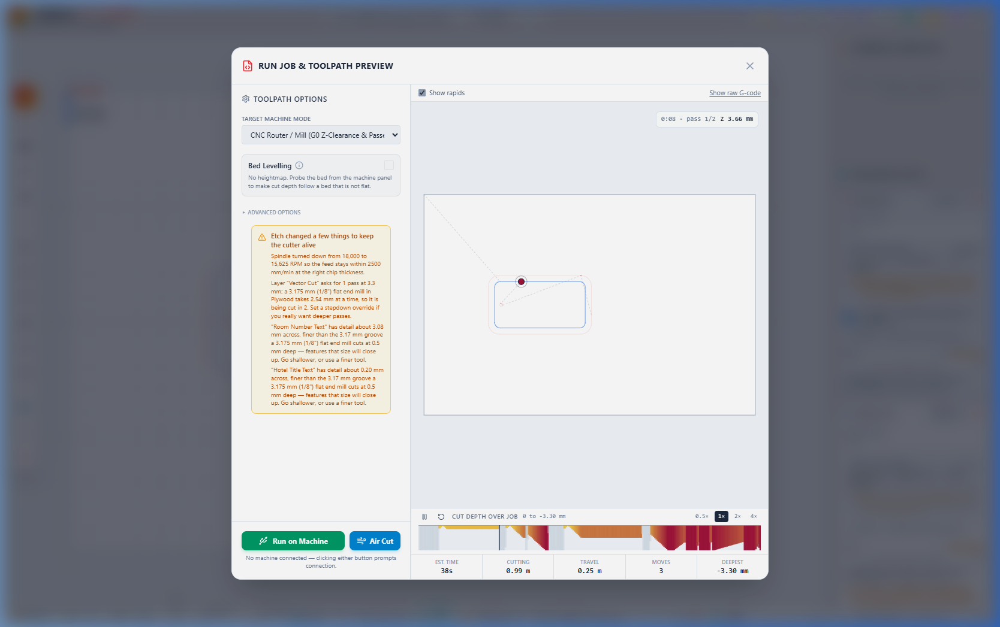
PhysBox Etch Toolpath 3D Preview: Visualizing rapid moves, multi-pass stepdowns, and holding tabs.
6. 3D Toolpath Preview & Live WebSerial Streaming
PhysBox Etch streams G-code directly over USB WebSerial (supported in Chrome, Edge, and Opera). Connect your laptop to your GRBL 1.1, FluidNC, or grblHAL controller board.
PhysBox Etch WebSerial Streamer: Live coordinates, job boundary framing, feed override sliders, and emergency stop.
7. The Post-Mortem Guide: What Went Wrong?
Every CNC machinist and laser crafter makes mistakes. Here is how to diagnose the top shop floor issues:
Spindle Stalls / Loud Screech
Cause: Pass depth is too deep or feed rate is too fast. Fix: Back the feed off with Live Trim — it acts on the motion already buffered, so you do not lose the job. If it is still screeching, E-STOP, halve the stepdown in the Etch layer panel and re-run.
Charred / Blackened Wood
Cause: Spindle RPM is too high relative to feed speed (friction burn). Fix: Nudge feed up or spindle down with Live Trim mid-job until the burning stops, then save that pair into the layer for next time.
Rounded Inside Corners
Cause: A round 3.175mm end mill cannot cut sharp 90° inside corners on mating box tabs. Fix: Use Dogbone or T-bone corner reliefs in your vector design.
Congratulations!
You now possess the foundational knowledge to turn raw lumber into precision carved parts with PhysBox Etch. Remember: zero your Z properly, use holding tabs, wear eye protection, and enjoy the magical craft of making!
PhysBox Volt Studio Browser EDA & PCB CAM 18 Min Read Level: Intermediate
Bode Sweeps, 2-Layer PCB Milling & Realtime ESP32 HIL
How to design mixed-signal schematics, sweep small-signal Bode plots, link live 3D MuJoCo motors, probe copper-clad FR4 for 2-layer PCB milling, and stream real silicon over WebSerial.
1. Hardware-In-The-Loop (HIL) Silicon Meets SPICE
Traditional circuit simulators run purely in software isolation. Testing how physical ESP32 or CYD firmware responds to inductive motor kickback, active filters, or mechanical stall loads usually forces you to choose between breadboarding blind or writing synthetic mocks.
PhysBox Volt bridges both worlds. Its synchronous XSPICE/Ngspice WebAssembly engine streams bi-directionally in realtime over WebSerial with physical microcontrollers — exchanging ADC samples, DAC rail levels, and GPIO transitions without leaving the schematic canvas.
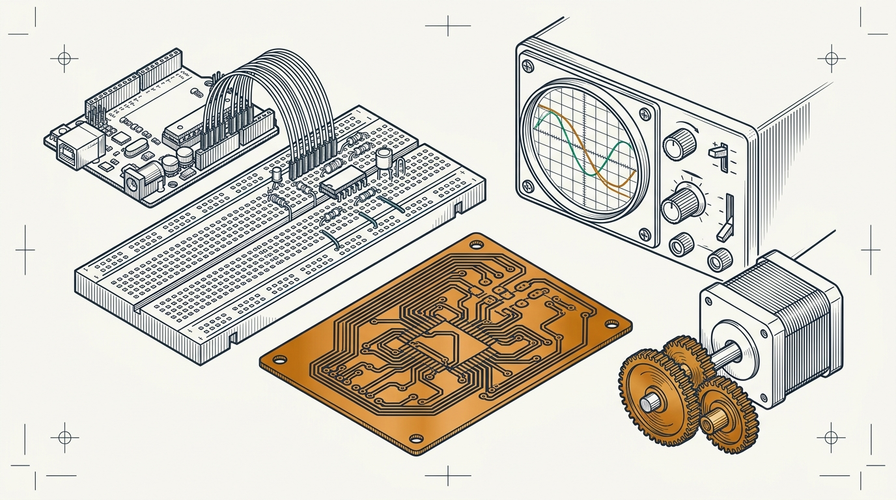
Coupled Mixed-Signal Bench: Physical MCU I/O, small-signal Bode frequency response, 2-layer isolation-milled FR4 copper, and electromechanical motor loads operating in one loop.
2. Quiescent DC Voltage Chips, Bode Sweeps & Power Ratings
Before committing a schematic to copper, Volt gives you three complementary inspection modes along the bottom status bar:
Quiescent DC Operating Point (DC): Stamps live quiescent voltage chips onto every wire net so biased op-amp rails, voltage dividers, and transistor base-emitter drops are readable at a glance.
Small-Signal AC Bode Sweeps (Bode): Sweeps log frequency across decades to plot magnitude (dB) and phase (°), automatically tagging the exact −3 dB cutoff frequency and supporting multi-value component parameter stepping (Step).
Live ERC & Component Rating Advisories: Flags shorted voltage rails, floating CMOS inputs, reverse-biased LEDs, and resistors exceeding their quarter-watt thermal envelope while the simulation runs.
PhysBox Volt Analysis View: Sallen-Key second-order active low-pass filter showing live DC net chips, dual-channel transient scope, and swept AC Bode curve (−3 dB at 1.12 kHz).
3. Single & 2-Layer Conductive PCB Milling, Stencils & Gerbers
Click Make in Volt's header to turn your schematic into a physical board on a desktop CNC mill (or export standard RS-274X Gerbers for a board house):
1
Copper Flood & DRC Routing
Auto-place footprints or drag/rotate (R) parts interactively. Volt routes top and bottom copper layers with generous pad clearance rings and optional copper flood so V-bits spend minutes, not hours, clearing copper.
2
4×4 Conductive FR4 Auto-Level
Copper-clad fiberglass always bows by 0.05–0.20 mm, which ruins shallow V-bit isolation passes. Clip probe leads to the V-bit and blank to sample a 16-point heightmap over WebSerial and warp Z toolpaths automatically.
3
Flip Pins & Etch Paste Stencils
For 2-layer boards, Volt drills 0.8 mm symmetric alignment pin holes into the spoilboard so the flipped board registers to sub-tenth accuracy — and sends SMD solder-paste apertures straight to PhysBox Etch for Mylar laser cutting.
2-Layer PCB Milling & CAM Engine: Interactive footprint placement, spoilboard registration pin depth, copper flood clearances, and one-click handoffs to Mesh (3D enclosure CAD) or Etch (paste stencil).
4. Live Mesh Electromechanical Co-Simulation & WebAudio I/O
Circuits rarely stop at a load resistor. Click Link Mesh in Volt's status bar to bind H-bridges, step drivers, NEMA 17 steppers, DC gearmotors, and Thiele-Small speaker drivers directly to a running 3D MuJoCo scene — Volt integrates coil currents and back-EMF while Mesh solves mechanical inertia, gear stall loads, and 3D enclosure acoustics.
For pure analog audio work (guitar pedals, synth VCFs, active crossovers), drop Microphone and Speaker nodes onto the canvas to stream live WebAudio straight through your SPICE components as you turn potentiometer sliders.
Pro Tip: Natural-Language Agent Workflows
With physbox-mcp connected, you don't need to memorize SPICE directives or tool names — just ask your AI agent to tune a filter corner, verify resistor power dissipation, and lay out a two-layer board.
PhysBox Mesh Studio 20 Min Read Level: Beginner to Advanced
Lattice & Sculpt CAD, Hydrostatics, 3D Vibro-Acoustics & Fabrication
Model hard-surface cages, clay sculpts, and OpenSCAD assemblies; simulate concave collisions, Archimedes buoyancy, internal hex-nut ballast, and zero-sample 3D instrument acoustics; then build the real part.
Different physical parts ask for different modelling tools, so PhysBox Mesh puts all three in the same scene tree:
Lattice Cage Modelling: Snap vertices on a clean decade grid (0.1–100 mm) for brackets, enclosures, and turned lathe revolves; press E on any edge loop for live parametric fillets/chamfers, or toggle Catmull–Clark subdivision.
Clay Sculpting & Silhouette Scissors: Brush organic forms from spheres, heads, or imported STLs and slice clean planar cuts straight across the viewport with the Scissors tool.
Parametric WASM OpenSCAD & Surface Generators: Write exact CSG scripts with inline Customizer sliders, and press T on any face to flood procedural architectural textures (Fluted, Kumiko, Guilloché, Lotus Mandala, Parquet, or curved Google Font lettering) onto printable geometry without slowing down physics.
2. Concave Collisions, Container Water & Hex-Nut Ballast
Every hollow body in Mesh undergoes automatic background V-HACD concave decomposition so bowls hold marbles, funnels guide parts, and open skiffs displace water until water spills over their gunwales.
Fill any open tank with water in the Inspector to enable 3D Archimedes hydrostatics (integrating submerged surface pressure and righting moments every MuJoCo step). If a top-heavy sculpture tips over on a shelf or capsizes in water, open the Balance card (Stand, Spin, or Float) — Mesh hollows internal cavities sized for standard M4–M16 steel hex nuts so you can pause your 3D print, drop in hardware-store ballast, and hit the exact target center of gravity.
3D Archimedes Hydrostatics & Auto-Ballast: An unballasted buoy capsizes on the left while six internal M16 steel hex nuts keep the center spar buoy upright beside a floating #3DBenchy.
3. Zero-Sample 3D Vibro-Acoustics & Luthier Soundboards
Every collision, plucked string, struck marimba bar, and blown bore in Mesh is synthesized live in a WebAudio Worklet from your part's actual 3D mesh and material constants (Young's modulus, density, loss tangent) — with zero pre-recorded audio samples.
Hollow wooden bodies couple Kirchhoff–Love bending-plate modes to a 3D FDTD air-chamber Helmholtz solver: widen a soundhole or thin a Sitka spruce top by 0.5 mm and hear the body resonance shift immediately before milling the real hardwood instrument.
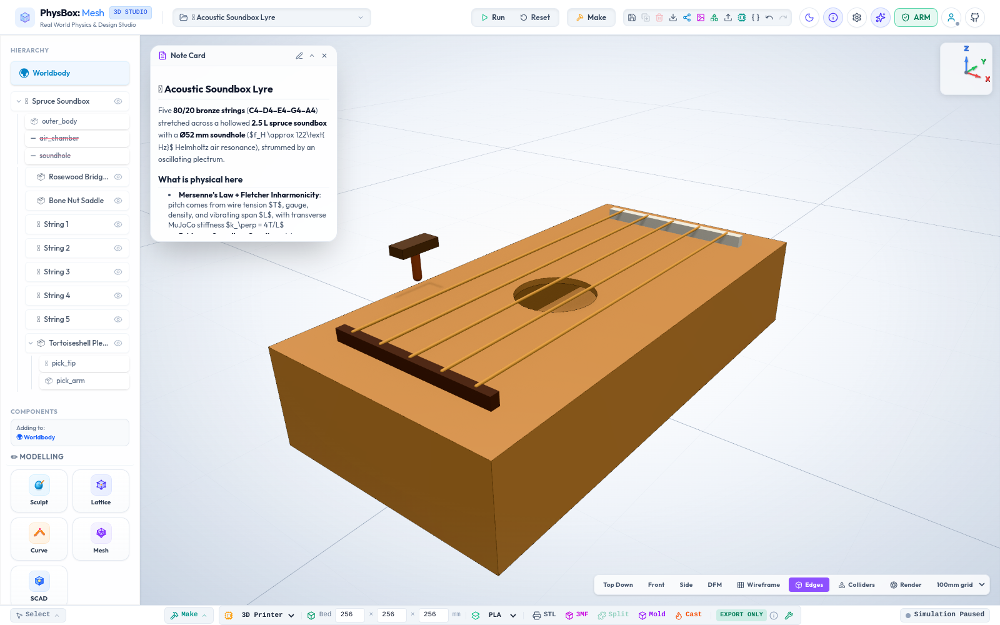
In MeshCoupled String + Soundbox Solver: Five 80/20 bronze strings over a 2.5 L hollowed spruce cavity (∅52 mm soundhole, fH ≈ 122 Hz).
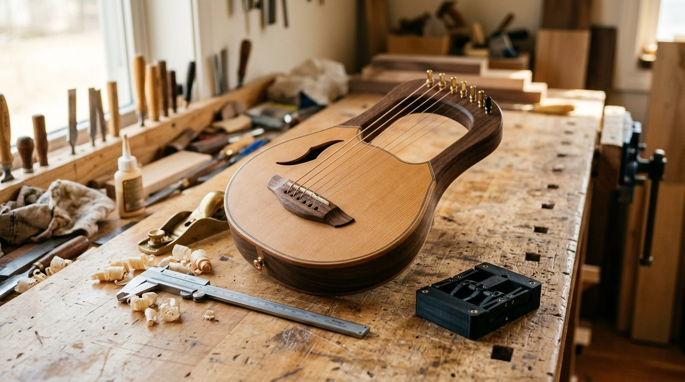
Built in ShopPhysical CNC-Milled Instrument: Sitka spruce soundboard & walnut frame machined from the simulated dimensions, beside a printed flexure jig.
Toggle DFM in the viewport bar to paint steep overhangs and thin walls directly on the model. When ready to build, export assembly-aligned multi-material 3MF plates, split oversized prints with alignment dowels, break frames into CNC-mortised Timber cut-lists, lay bonded Brickwork courses, or unfold finger-jointed sheets straight into Etch. Every fabrication dialog includes Add Simulation so you can drop the machined, laser-cut, or cast result back into MuJoCo to verify fit and strength before cutting real stock.
PhysBox Mesh · Foundry 18 Min Read Level: Beginner to Intermediate
Backyard Sand Casting from One-Piece 3D-Printed Patterns in Mesh
Export a single ready-to-ram STL with alloy shrinkage, pull draft, edge fillets, sprue, runner, ingate, and Chvorinov riser already fused on — then verify cavity fill with Simulate Cast before touching sand.
1. Why Export Your Sand Pattern from Mesh Instead of Hand-Carving Gates?
In green-sand or oil-bonded (Petrobond) foundry work, your 3D print is a reusable positive pattern: you pack sand firmly around it inside a two-half alignment box (the drag on the bottom and the cope on top), separate the halves along the parting plane, and lift the plastic print out to leave a cavity ready for molten metal.
Traditionally, printing a raw CAD STL leaves all the hardest foundry math to guesswork on the bench — hand-cutting runners with a slick spoon (which sends loose sand grains straight into the mold), guessing riser diameter, and discovering stuck walls only after tearing up your mold. PhysBox Mesh → Mold → Sand builds the entire pattern and feed rig for you as one 3D-printable STL:
One-Piece Printed Gating Rig: Automatically sizes the down-sprue choke for smooth fill rate, places a Chvorinov-sized side riser beside the heaviest (last-freezing) section by thermal modulus, and fuses the sprue well, runner bar, and ingate directly onto the pattern at the parting plane. Ramming sand around the print molds clean, compacted channels with zero hand-scooping!
Flask-Matched Cope + Drag Height: Set Cope + Drag height (mm) to match your physical sand flask (defaulting to 100 mm for a pair of 50 mm cope and drag halves). Mesh extends the printed sprue right up to the top face of your cope so you can strike the sand off dead-flat across the box, caps open risers cleanly at the flask rim, and warns immediately if a tall casting leaves thin sand cover in either half.
Automatic Parting-Plane Search & Overhang Check: Scans heights up the part to find the parting plane that traps the least sand, and reports the exact percentage of undrawable overhangs before you print.
Non-Destructive Prepare for Casting: Tapers vertical walls with pull draft, chamfers outside corners (preventing crumbly sand knife-edges), and fillets sharp inside corners (preventing sand wash-out and hot-tear cracks) while keeping your original CAD geometry one toggle away.
One-Click Simulate Cast: Virtually packs the flask, pulls the pattern, pours metal down the sprue, and checks that 100% of the cavity is reached — reporting exact cast weight, remelted gating weight, and surface deviation against your master.
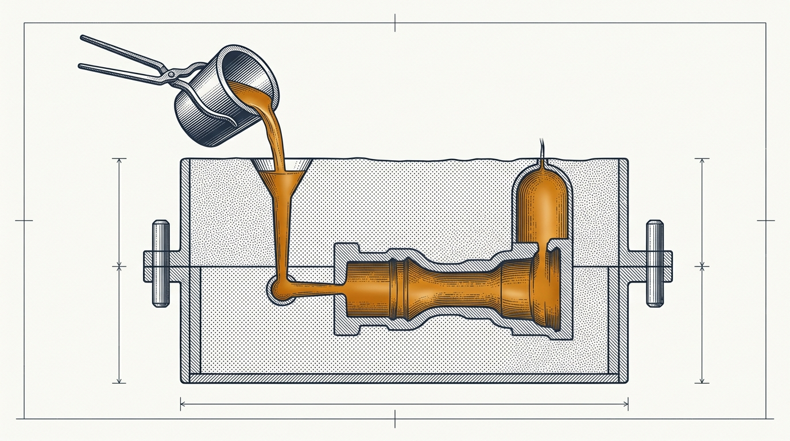
Cope & Drag Sand-Mold Cutaway: Registration pins align the upper cope and lower drag while molten metal flows down the sprue, along the runner/ingate, into the cavity, and up into the side riser that feeds solidification shrinkage.
Open Mold → Sand in Mesh, pick your alloy — Aluminium (+1.3%), Brass (+1.5%), Bronze (+1.5%), or Silver (+1.6%) — and enter your Cope + Drag height (mm) (assuming equal-height halves, so two 50 mm frames = 100 mm). Mesh scales the pattern up automatically for thermal shrinkage, adds 1°–3° of pull draft so vertical walls break contact cleanly the instant you lift, sizes the down-sprue to reach flush with the top of your cope, and previews the complete one-piece STL live in 3D:
In MeshOne-Piece Sand Pattern Planner: Sets a 100 mm flask (50 + 50 mm halves), scales #3DBenchy +1.3%, fuses the flush 50 mm sprue, runner, and side riser onto the hull, and flags the 37% cabin overhang up front.
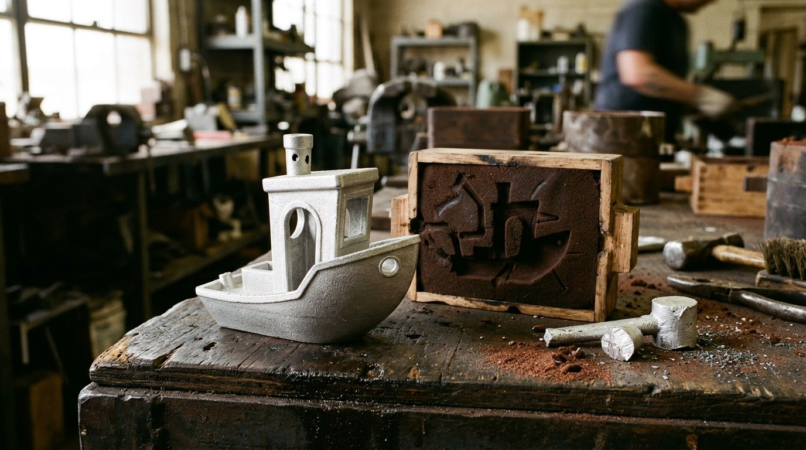
Cast in ShopFinished Aluminium Sand Casting: Solid A356 aluminium Benchy shaken out of oil-bonded Petrobond sand (with cabin cores/cheeks) beside its sawn sprue button.
Pro Tip: Toggle “Prepare for Casting” Under Advanced
Expand Advanced → Prepare for Casting and switch it On before exporting. Mesh rounds sharp internal corners into smooth fillets and chamfers outside edges across every body in the scene while leaving the parting face crisp — and you can switch it back Off anytime to edit your original sharp CAD model.
3. Printing & Smoothing the One-Piece Pattern + Gating Rig
Click Download Pattern (STL) to export the pattern with its sprue, runner, gate, and riser already standing flat on the build plate (or click Simulate Cast first to drop the virtual poured casting beside your master and inspect its fill). Even with 2°–3° of draft, raw 0.20 mm FDM layer ridges grip tightly rammed Petrobond like microscopic saw teeth — ten minutes of surface prep makes the whole rig draw like polished brass:
Print Rigid, Not Spongy: Slice in PLA or PETG with 3–4 perimeters, 4 top/bottom layers, and 20% infill so firm bench ramming won't flex the walls or snap the runner neck.
Filler Primer + 400-Grit Wet Sand: Mist two light coats of automotive high-build filler primer over the pattern and printed sprue/riser columns, then wet-sand smooth so not a single horizontal layer step catches the sand.
Mid-Height Parting or Split Patterns: When Mesh places the optimal parting plane partway up a symmetrical part (like a gear hub, pulley, or sphere), its printed runner and tapered riser post still stand cleanly on the print bed — or use Mesh's Scissors / Split tool to print flat-backed drag and cope halves for tall two-sided work.
4. Ramming Around the Printed Rig & Drawing Cleanly
Because Petrobond and green sand are naturally gas-permeable (steam and air breathe right out between the sand grains) and Mesh's printed rig already forms the sprue well, runner, gate, and riser, bench molding needs no hand-carved channels or wire-poked vents on ordinary parts:
1
Dust & Ram the Drag
Set the one-piece printed pattern on a molding board inside the inverted drag, dust lightly with talc/parting powder, sieve fine facing sand over the detail, ram firm, strike off flat, and flip the drag over.
2
Ram the Cope Over the Sprue
Seat the cope on its alignment pins, dust the parting plane thoroughly, and ram sand straight around Mesh's printed down-sprue and riser columns until flush with the top of the sprue.
3
Bell the Mouth & Draw
Thumb a smooth funnel flare into the sand around the top of the printed sprue, lift the cope off, tap the pattern lightly to break static friction, and lift the entire printed pattern + gating rig straight out in one piece!
Shop-Floor Note: When Should You Poke Wire Vents?
On flat or gently contoured parts, gas-permeable sand and an open top riser let air escape between the grains without extra venting. However, if your casting has tall blind bosses or deep closed pockets high in the cope (especially in oil-bonded Petrobond, which generates oil smoke on contact with molten metal), push a stiff 1.5 mm wire straight up from the highest roof of each pocket through the top of the cope before lifting the cope off the pattern — giving trapped air and smoke an instant chimney so thin upper features fill razor-sharp.
5. Clamping, Pouring Choked & Foundry Safety
Blow out any stray grains, re-close the cope onto the drag, set a weight or C-clamp across the flask (molten metal exerts enough hydrostatic lift to float an unweighted cope right off the parting line!), and melt the exact pour gram weight shown in Mesh's summary card:
Keep the Sprue Mouth Full (“Choked”): Hold the crucible lip close to the flared sprue mouth and pour steadily so it stays brim-full from start to finish — slag floats harmlessly on top while clean metal feeds smoothly along Mesh's runner into the cavity and up into the side riser.
Let Cool Before Shakeout: Give aluminium 10–15 minutes (bronze 15–20 minutes) so hot-short alloys regain full strength before breaking open the sand, sawing off the runner and riser stubs, and brushing your reusable 3D-printed pattern clean for the next pour.
Non-Negotiable Foundry Safety
Pre-heat every ingot, skimmer, and crucible tong over the furnace exhaust before touching liquid metal — one drop of condensation expands 1,600× into steam instantaneously, ejecting molten metal. Always wear leather boots/spats, welding/aluminized gauntlets, a full polycarbonate face shield, and pour over a bed of dry sand — never bare concrete (which spalls explosively under spilled metal).
PhysBox Mesh · Investment 20 Min Read Level: Intermediate
Cast intricate bronze, brass, silver, and aluminium parts with zero draft limits — Mesh fuses the pouring cup, modulus-sized sprue, and air-pocket vents onto your STL as one printable burnout tree, then computes flask dimensions and investment grams.
1. Sand vs. Lost PLA: Why Undercuts Cost Nothing Here
Remember how Sand Casting flagged 37% of #3DBenchy's cabin arches as un-drawable overhangs? Lost-PLA investment casting turns that limitation on its head: you bury a sacrificial 3D print inside liquid gypsum-silica refractory investment, let it set rock-hard, and melt/vaporize the plastic out in a burnout kiln. Because the pattern leaves as liquid and gas rather than pulling mechanically, cabins, portholes, internal passages, lattices, and organic sculptures cast in one piece with 0° draft.
Two-Stage Investment Process: (Left) Sacrificial PLA tree mounted cup-down on a rubber sprue base inside an invested flask; (Right) After inverted kiln burnout, the hot refractory cavity is flipped upright to receive molten bronze.
Hand-waxing sprues and guessing which pockets will trap air inside an opaque plaster flask is the #1 cause of short-pours in home investment casting. In PhysBox Mesh → Mold → Lost PLA, pick your alloy (Silver, Brass, Bronze, or Aluminium) and Mesh generates the entire burnout tree as one ready-to-slice STL:
Shrinkage + Thermal-Modulus Sprue: Scales the model up (+1.3% aluminium, +1.5% brass/bronze, +1.6% silver) and roots a flared pouring cup and sprue directly onto the heaviest, last-freezing section so the cup stays molten longest and feeds solidification shrinkage without a separate side riser.
Automatic Trapped-Air Pocket Vents: Scans the 3D cavity for blind ceiling pockets where rising metal or burnout gas would stall (such as Benchy's cabin roof and bow deck) and fuses slender vertical vent rods up to the flask rim — angling them out at 45° under the pouring cup whenever needed so metal splashes cannot choke them.
Exact Flask, Investment & Simulate Cast Check: Outputs the minimum steel flask diameter × height (with 12 mm refractory wall margin), PLA print weight, and exact grams of investment powder and water — plus Simulate Cast to verify that metal from the sprue reaches 100% of every part in the scene.
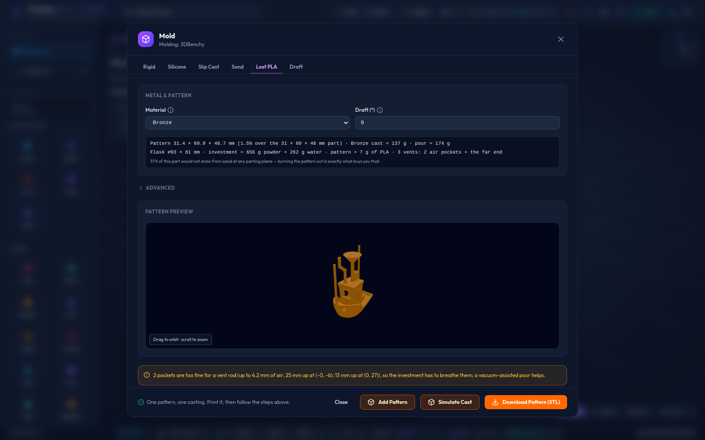
In MeshLost-PLA Burnout Planner: Bronze #3DBenchy (+1.5% shrink, 137 g cast / 174 g pour) with fused cup + 3 vents, ∅93×81 mm flask, and 656 g powder + 262 g water.
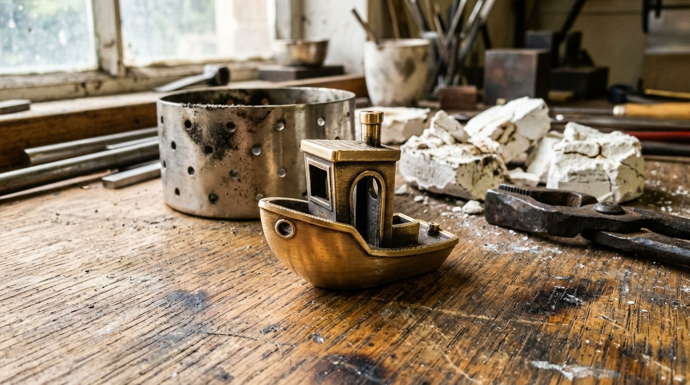
Cast in ShopFinished Solid Silicon Bronze Benchy: Quenched from the perforated flask with crisp cabin arches, porthole rings, and warm brushed bronze highlights.
3. Slicer Settings That Prevent Cracked Investment Shells
Solid plastic expands thermally long before it melts! A 100%-infill PLA print acts like a hydraulic wedge between 80–130 °C and splits your plaster mold wide open. Follow these three slicer rules every time:
The Hollow Collapse Rule
Print in unpigmented / natural PLA (or dedicated PolyCast filament — avoid matte white TiO₂, carbon fiber, or wood-fill, which leave stubborn ash!) with 2 thin walls (0.8 mm) and 8–10% gyroid infill. As the kiln crosses glass transition, thin walls soften and buckle harmlessly inward into the hollow interior. Drill a 2 mm drain hole connecting the hollow print cavity into the printed sprue throat so melted PLA runs straight out!
Optional surface trick: Brush a thin 0.3 mm coat of low-ash jeweller's microcrystalline/beeswax over your PLA print and smooth with a warm air gun — it erases FDM layer lines AND melts out first at 70 °C, leaving an expansion buffer gap between the PLA and the investment wall!
4. Mixing, Vacuum Degassing & Investing the Flask
Seal to the Rubber Sprue Base: Wax the lip of your printed pouring cup dead-center onto a rubber flask base and seat the steel flask sleeve firmly (tape perforations securely if using a perforated vacuum flask).
Weigh & Sift Powder into Water: Use a jewellery investment formulated for high burnout (such as Ransom & Randolph Plasticast, Prestige Optima, or SRS Classic — never hardware-store Plaster of Paris, which cracks at 730 °C!). Weigh the exact powder and water grams from Mesh's summary card, and always sift powder into room-temperature water (~21 °C), never water into powder.
Two-Stage Vacuum Degas: Mix for 3.5 minutes, pull vacuum in a bell jar until the slurry foams up to 3× volume and collapses (“breaks”), then pour slowly down the inside steel wall of the flask so rising slurry fills undercuts from below. Pull vacuum a second time for 60–90 seconds to lift micro-bubbles off the PLA, then let cure undisturbed on a vibration-free bench for 2–3 hours.
5. The 4-Stage Kiln Burnout Schedule & Flask Stabilization
Peel off the rubber sprue base, stand the flask cup-down on ceramic kiln stilts over a stainless catch tray (for initial melt-out), ensure active workshop exhaust ventilation, and run a controlled ramp:
1
150 °C · Steam Dry (2 h)
Evaporates free moisture gently. Ramping straight past 200 °C boils trapped water into steam pockets that spall investment faces into the cavity.
2
300 °C · Bulk Melt-Out (2 h)
Liquid PLA drains cleanly down the inverted sprue cup before heavy pyrolysis begins. Remove the drip tray carefully if your kiln design requires it.
3
730 °C · Ash Burnout (3–4 h)
Crack the kiln peephole slightly for oxygen! Carbon residue oxidizes completely to CO₂ gas until the sprue throat glows clean chalk-white with zero grey soot.
Crucial Final Step — Drop to Pouring Flask Temp: Do not pour bronze into a 730 °C flask (calcium sulfate decomposes above 750 °C, causing rough “christmas-tree” sulfur gas porosity!). Ramp the kiln down and let the flask stabilize for 1 hour at Mesh's recommended flask temperature (~450–525 °C for bronze/silver, ~350–400 °C for aluminium).
6. Vacuum-Assisted Pouring, Quenching & Pickling
Transfer the hot flask with foundry tongs onto your vacuum casting pad (or dry sand bed for gravity pouring), switch on vacuum suction so air pulls right through the porous investment walls, and pour your fluxed/degassed melt in one decisive stream. Let the button freeze from bright orange down to dull cherry red (~8–12 minutes for bronze; let aluminium cool longer so it doesn't fracture), then plunge the hot flask with tongs into a deep steel bucket of water — thermal shock shatters the gypsum investment right off your metal casting!
PhysBox Mesh · Ceramics 18 Min Read Level: Beginner to Intermediate
Ceramic Slip Casting: Multi-Part Plaster Molds from 3D-Printed Cases
Turn sculpted or revolved vessels in Mesh into 2-to-6 piece natched Potter's #1 plaster molds — complete with firing-shrinkage scaling, separable C-clip mother cases, slip spares, and wall-build simulation.
1. Capillary Suction: How Liquid Clay Builds a Hollow Vessel
Ceramic casting slip (porcelain, stoneware, or earthenware clay deflocculated with sodium silicate/Darvan so it pours like heavy cream at low water content) does not set chemically. Instead, you pour slip into a dry, microporous Potter's #1 plaster mold. Capillary suction in the dry gypsum draws water out of the outer layer of slip, compacting clay platelets into a leather-firm shell (3–5 mm thick in 15–25 minutes). Tip the mold upside down to pour out the still-liquid interior, and a hollow vase remains!
3-Piece Slip-Casting Mold Cutaway: Two natched plaster side halves and a self-centering tapered base plug strapped together while liquid slip fills the upper spare reservoir and builds an even ceramic wall.
2. Firing Shrinkage, Auto Radial Splits, Natches & Wall Simulation
Making traditional plaster mother-molds by hand with clay cottle boards, hand-carved keys, and slide-rule shrinkage tables takes days of studio work. Because non-porous 3D-printed PLA cannot absorb water from clay directly, PhysBox Mesh → Mold → Slip Cast generates the complete set of 3D-printed mother-cases that cast your plaster blocks — and lets you step through 1 · Print these, 2 · Fill with plaster, and 3 · Strap and pour slip right in the viewport:
Wet-to-Fired Shrinkage Scaling (+7% to +14.9%): Clay shrinks once as it dries to bone-dry greenware and a second time as it vitrifies in the kiln. Pick Porcelain (13%), Stoneware (12%), or Earthenware (7%) (or enter your own test-bar percentage) and Mesh grows the mold cavity automatically so your fired piece hits exact modelled dimensions.
Automatic 2–6 Side Parting + Tapered Base Plug: Mesh searches every parting angle around the pour axis to find the fewest radial side pieces (2 to 6) that pull away with zero undercuts — splitting a mug cleanly down the middle of its handle — and adds a self-seating tapered base plug whenever your vessel has a foot ring.
Conical Alignment Natches, Slip Spare & Plaster Budget: Sinks self-locking conical keys (natches) into every parting face, adds a 25 mm spare collar above the rim so the dropping slip level never leaves a tide mark, and calculates exact grams of plaster powder, mixing water, and millilitres of slip (or fits wall thickness to whatever plaster weight you have on hand!).
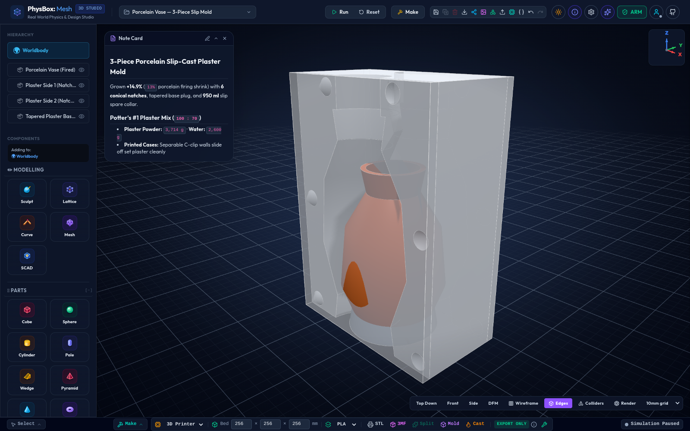
In MeshGenerated 3-Piece Plaster Mold: Bellied porcelain vase grown +14.9% inside two 6-natch plaster side halves + tapered base plug (3,714 g plaster : 2,600 g water). Fired in StudioGlaze-Fired Porcelain Vase & Plaster Mold: The three cured Potter's #1 plaster pieces unstrapped beside the finished cone-6 translucent porcelain vase.
Set gypsum expands slightly (~0.15%) and warms up (~42 °C exotherm) as it crystallizes, which locks rigid one-piece plastic boxes tightly onto cured plaster. Leave Printed cases set to Separable in Mesh: each case exports flat-on-bed as a seamless pattern base, two U-shaped wall halves, and two sliding dovetail C-clips. Once the plaster sets, you simply tap the clips upward and slide the walls sideways off the warm plaster block with zero prying!
Soap the Printed Cases: Brush two thin coats of potter's mold soap (or Murphy's oil soap wiped nearly dry) onto the printed PLA pattern face and walls so plaster releases satin-smooth.
Weigh 100 : 70 Potter's Plaster: Use ceramic USG No. 1 Pottery Plaster (never hardware patching plaster!). Weigh out the exact grams of powder and water reported by Mesh (100 parts plaster to 70 parts water by weight), sift plaster steadily into water, let slake undisturbed for 2 minutes, then stir gently from the bottom for 3 minutes without whipping air in.
Tap Bubbles & Cure Dry Below 45 °C: Pour slowly into the lowest corner of each printed case, rap the bench for 60 seconds to float air pearls off the vase face, slide the walls off once cool after the warm exotherm peaks (~45 min), and let the plaster pieces dry in moving room air for several days (never bake above 48 °C, which calcines plaster soft and chalky!).
Click Simulate Cast in Mesh before printing to build the virtual 3.5 mm clay shell, verify narrow necks won't choke off draining, and check fired weight.
2
Strap, Pour & Drain
Seat the dry natched plaster halves round the base plug, cinch with rubber mold bands, sieve-pour slip to the top of the spare, top up as plaster drinks water, and drain after 15–22 minutes.
3
Trim Spare & Demold
Once the clay sheen turns matte and pulls 0.5 mm away from the plaster collar (~45 min), trim cleanly around the top of the spare with a fettling knife, unstrap the sides, sponge seam lines softly, and bisque/glaze fire!
Sculpt twisted-fluted, geometric, or botanical pillar candles in Mesh and generate a leak-proof C-clip pour box with an integrated center wick pin — plus exact Part A/B silicone and beeswax gram weights.
1. Why Flexible Silicone Pour Boxes Beat Rigid Wax Molds
Pouring molten wax (~68–72 °C) straight into a rigid 3D-printed PLA mold invites two frustrations: PLA begins glass-transition softening around 60 °C, and sculptural textures (helical flutes, botanical reliefs, kumiko facets) lock mechanically inside rigid walls.
Making a reusable platinum-cure silicone rubber mold inside a 3D-printed Mesh Pour Box gives you the best of both worlds: zero hot-glue foamboard leaks on the bench, up to 40% less silicone wasted thanks to a silhouette-hugging sleeve, and a satin-flexible rubber interior that peels cleanly off deep helical undercuts for hundreds of candles.
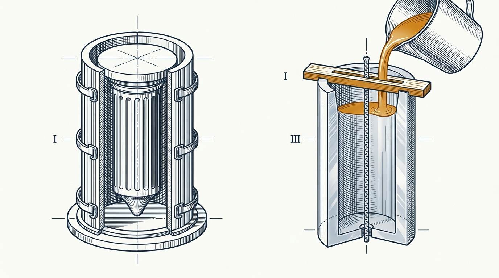
From Master to Inverted Wax Pour: (Left) The candle master stands upright on a grooved printed base inside a C-clipped split sleeve while silicone cures over it; (Right) Flipped upside down, the silicone mold threads a braided wick straight through its molded center pin hole to receive golden beeswax.
Build your candle master in Mesh using Lattice, Clay Sculpt, or Surface Patterns (press T → Fluted, Wave Slats, Guilloché, or Foliage), then open Mold → Silicone:
Automatic Inverted Orientation: Keep your candle standing right-side up in Mesh! The silicone mold cures over the top of your master (8 mm cover) and flips upside down for wax pouring — so your candle's flat bottom automatically becomes the wide open pour face, and its sculpted crown forms cleanly at the bottom of the mold.
Self-Centering Wick Pin: Under Advanced → Hole through the mold, choose For a wick (∅2.5 mm). Mesh generates a vertical printed pin at the top center of your master that pierces through the silicone cap — molding a clean, dead-center wick tunnel with zero hand-drilling!
Silhouette-Fitted Split Sleeve + Sliding C-Clips: Setting Sleeve shape to Fit to master with a Separable printed sleeve contours the wall 8 mm around your candle (284 g of silicone instead of 460 g in a square box) with a labyrinth seam seal, a 3 mm base groove, and two sliding dovetail C-clips — plus Simulate Cast to preview the inverted silicone mold, auto-cut vents, and finished wax weight in one click.
In MeshFitted Pour-Box Planner: 14-flute helical pillar (∅61 × 105 mm) with ∅2.5 mm center wick pin, split C-clip sleeve, and 142 g Part A + 142 g Part B silicone recipe.
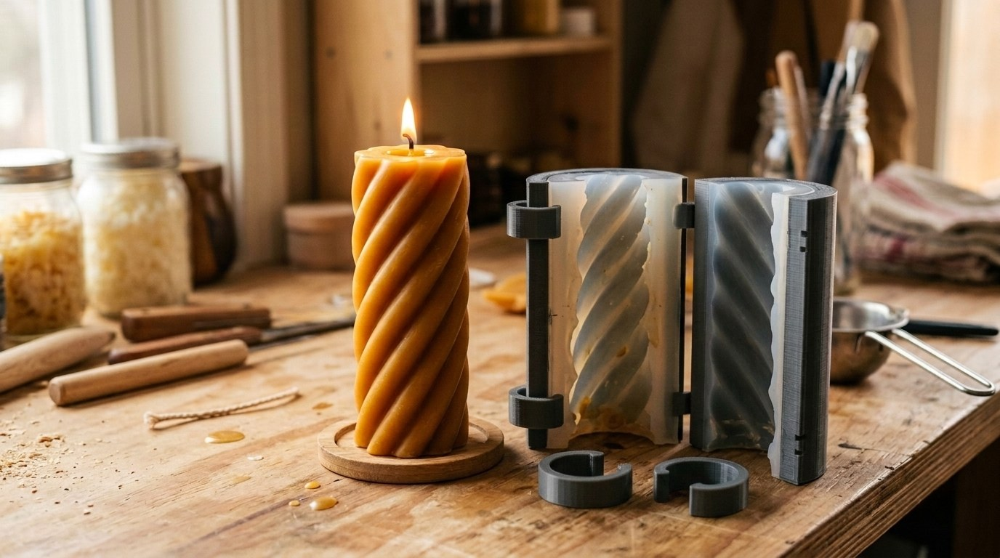
Poured on BenchFinished Pure Beeswax Pillar: Demolded from the translucent Shore 15A platinum silicone sleeve and C-clipped printed PLA mother shell.
3. Mixing & Pouring Bubble-Free Silicone (No Vacuum Chamber Needed)
Choose a soft, stretchy Shore 10A–20A platinum-cure (1:1) silicone so tall candles peel out effortlessly without tearing delicate wax flutes:
Anchor the Master Down: Hollow plastic prints float in dense liquid silicone (1.08 g/cm³)! Run a thin bead of hot glue (or double-sided tape) under the bottom rim of your sanded/primed PLA candle master so it stays seated firmly on the pour-box base plate, and press the split sleeve firmly into its 3 mm base groove with both C-clips slid home.
Pour an “Angel-Hair” Stream from 25 cm High: Weigh equal grams of Part A and Part B from Mesh's card (or enter whatever silicone weight you have left under Silicone to hand and let Mesh size the cover to match!), scrape the mixing cup walls thoroughly, and pour in a thin, thread-like stream aimed at the lowest floor corner beside the master — never directly onto the candle. Stretching the stream pops trapped air bubbles on the way down while silicone rises smoothly from the bottom up!
FDM PLA vs. UV Resin Cure-Inhibition Tip
Standard FDM PLA, PETG, and ABS masters cure cleanly against 1:1 platinum silicone every time. Do not pour platinum silicone onto fresh SLA/MSLA UV resin prints without specialized barrier primer — photoinitiators inhibit platinum catalyst and leave uncured sticky film! (Use 10:1 tin-cure silicone if molding unsealed UV resin.)
4. Choosing Pillar Wax, Sizing the Wick & Eliminating Sinkholes
1
Use Pillar Wax (Never Container Soy)
Pick 100% pure filtered beeswax, pillar soy/paraffin blend, or rapeseed pillar wax — they contract ~2% as they cool so they release cleanly from silicone and stand tall without slumping.
2
Match Square-Braided Wick to Diameter
Beeswax is viscous and prefers square-braided cotton wick (#1/0 or #2/0 for a 55–65 mm pillar). Thread it through the molded bottom wick hole, seal outside with reusable wick putty, and pull taut into a slotted centering bar across the top.
3
Pour at 68–72 °C + Top-Up Well
Warm the silicone mold gently with a hairdryer to prevent cold jump-lines, pour slowly, and reserve 15 ml of wax in your pouring pot. Once a slight cooling dimple forms around the wick (~45 min), re-melt and top it flush so the candle base stands dead flat!
PhysBox Mesh · Soft Goods & Tailoring 18 Min Read Level: Beginner to Intermediate
Draft tailored shirts, dresses, trousers, jackets, and boned gowns onto measured dress forms in Mesh; sculpt silhouettes and style lines directly on the cloth; test multi-layer drape and fabric acoustics; and export millimetre-accurate SVG cutting patterns.
1. Why What Drapes in 3D Is Exactly What You Cut & Sew
Most 3D cloth tools force you to choose between decorative visual draping (shrinking an arbitrary 3D mesh that could never be cut from a flat bolt of cloth) or tedious 2D CAD drafting where you cannot see how armhole drop, dart intake, or rib-knit cuff elastic actually hangs until you sew a physical muslin toile.
PhysBox Mesh unites patternmaking and MuJoCo soft-body cloth physics in one loop. Every garment starts from a measured dress form, cuts a true developable shell along real tailoring seams, flattens each panel while reporting its exact flattening strain (%), and sews those very same 2D panels back onto the form in simulation:
Worn vs. Pieces Toggle: In the Inspector's Pattern card, switch between Worn (sewn and settled on the form) and Pieces (every cut panel laid flat in space around the mannequin — press Play to watch the seams draw together and stitch themselves onto the body live!).
9 Garment Blocks & Multi-Layer Outfits: Start from a T-shirt, Dress, Skirt, Gown, Jacket, Trousers, Tube (sleeves/leg warmers), Sock, or Hat, and stack outfits cleanly using the Layer number (layer 0 next to skin, layer 1 shirt over trousers, layer 2 cardigan or lapel jacket on top).
11 Physical Fabrics + Aero-Acoustic Rustle: Switch between Jersey, Rib knit, Spandex, Woven, Denim, Canvas, Ripstop nylon, Leather, Taffeta, Velvet, and Shade cloth — each carrying real areal weight (g/m²), stretch/bending stiffness, sheen, and trailing-edge whip-snap & weave-rustle sound in wind!
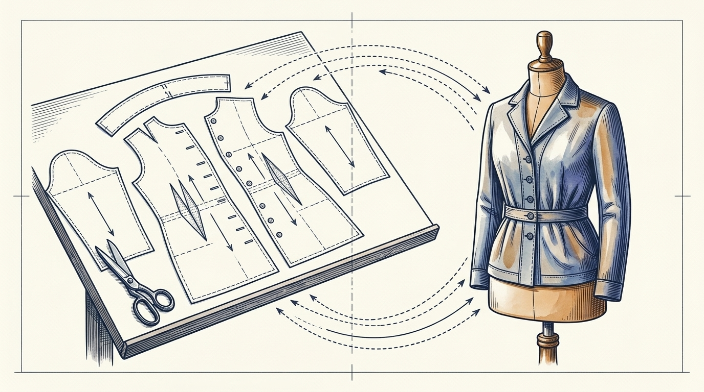
From Flat Pattern Panels to 3D Drape: Every panel shown in Mesh's Pattern card (complete with waist darts, grainline arrows, boning channels, and button/zipper marks) is the exact flat piece sewn together in the 3D cloth solver.
2. Ease, Darts, Collars, Fastenings & Direct Viewport Sculpting
Select any garment in the scene tree to open the Garment and Pattern cards in the right-hand Inspector. Instead of wrestling with raw UV vertices, you shape the fit with real dressmaker controls and direct 3D brushes:
Proportions, Negative Ease & Darts: Dial Length, Flare, Train, Sleeve, Cuff, and Armhole drop (from crisp set-in sleeves to deep batwings). Set positive Ease for woven room, negative ease for form-fitting Spandex, or check Fitted to shape woven bodices and bent-elbow sleeves with darts so panels flatten under ~3–4% strain.
Details, Trims, Belts & Boning: Pick Neckline, Hem, Collar (separate collar stand + folded fall, or notched jacket lapels), and Fastening (button stands or centre-back zippers, with a 0–100% done up slider under Arrange!), plus front/back patch Pockets, cinched leather Belts through belt loops, and spiral-steel seam boning or crinoline hoops.
Sculpt & Draw Directly on the Cloth: Click Sculpt on the garment under Silhouette and drag directly on the 3D cloth (with Both sides symmetry on) to push volume out or draw waistlines in, or click Draw on the garment under Lines to sketch custom princess Seams, slits/Openings, Cut-aways, or style marks — Mesh re-cuts the flat pattern pieces after every stroke!
Custom Fabric Prints (SVG): Click Import fabric SVG in the Pattern card to tile any vector motif across your cloth at true centimetre repeat scale before cutting or rendering.
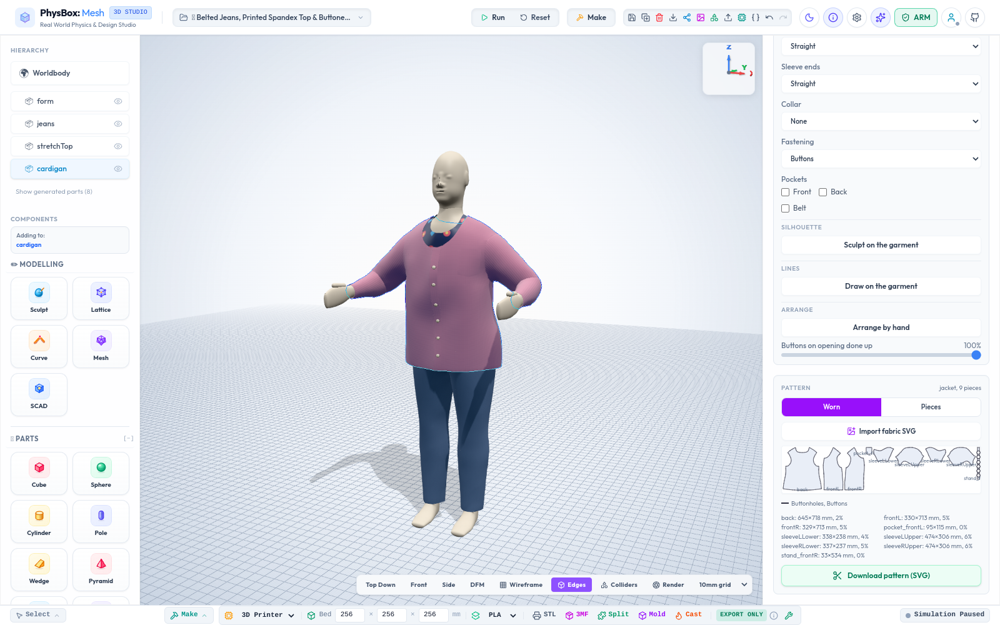
In Mesh3-Layer Tailored Outfit & Pattern Inspector: Belted denim jeans (layer 0), custom SVG-printed stretch top (layer 1), and buttoned rib-knit cardigan (layer 2) alongside live millimetre pattern pieces and flattening strain readouts. Sewn in AtelierPhysical Cut & Sewn Outfit: Assembled on the cutting table from the exported millimetre pattern panels, matching the simulated cardigan drape, pocket placement, and print scale.
3. Reading Strain %, Exporting SVG Patterns & Cutting on Laser or Table
Below the 2D pattern preview in the Inspector, Mesh lists every piece's bounding dimensions in millimetres and its 95th-percentile flattening strain (for example, frontL: 268×540 mm, 2%):
1
Check Strain vs. Fabric
Under 3–4% cuts cleanly in non-stretch woven cotton, linen, denim, or taffeta. Higher percentages tell you at a glance either to add a dart/princess seam or switch to a knit/stretch fabric.
2
Download True-Scale SVG
Click Download pattern (SVG). Mesh exports 1:1 millimetre net sewing lines (zero guesswork scaling!), labelled with piece names, straight-grain arrows, boning channels, and button/zipper marks.
3
Add Seam Allowance & Cut
Offset your preferred seam allowance (typically 10–15 mm for wovens, 6 mm for overlocked knits), then print tiled A4/AO paper templates or drop the SVG straight into PhysBox Etch for single-ply CO₂/diode laser fabric cutting!
PhysBox Mesh · Acoustics & Lutherie 20 Min Read Level: Beginner to Advanced
Designing & Tuning Acoustic Musical Instruments in PhysBox Mesh
Build bowed cellos, plucked soundbox lyres, undercut-tuned rosewood marimbas, keyed woodwinds, brass horns, and kettle drums — synthesized 100% from 3D geometry and material physics with zero pre-recorded audio samples.
1. Zero Audio Samples: How 3D Geometry Becomes Concert Sound
Turn on Sound in Mesh's top header (or inside the Environment gear menu) and tap or collide any body in the scene: you are not hearing an MP3 sample library. Mesh computes acoustic vibrations directly from your actual 3D CAD geometry, cavity air volume, and physical material constants (density, Young's modulus, quality factor Q) inside a realtime WebAudio Worklet:
Hollow Luthier Soundboxes (Plate + 3D FDTD Air Cavity): Carve a hollow spruce-and-maple body with boolean soundholes or twin f-holes and Mesh automatically measures the internal air volume in litres, solves the Helmholtz air-pumping resonance and top-plate bending modes, and convolves string bridge forces through a 3D vibro-acoustic impulse response — including internal bass bars and asymmetric spruce soundposts!
Bowed & Plucked Taut Strings: Models Mersenne tension, wire gauge, and breaking-stress % across gut, bronze, steel, and nylon strings, complete with live Schelleng bow-force window readouts (flautando, clean Helmholtz stick-slip, or pressed raucous crunch) and left-hand fingerboard stopping.
Struck Bars, Resonator Tubes & Nonlinear Crash Plates: Solves flexural modes and harmonic overtone ratios (f2/f1) on marimba/glockenspiel bars, couples suspended bars to λ/4 closed or λ/2 open resonator tubes (even motorized vibraphone tremolo fans!), and captures dramatic von Kármán pitch-glide & shimmer bloom on crash cymbals and gongs.
Woodwind & Brass Bore Waveguides + Drum Membranes: Extracts internal 3D airways for single-reed clarinets, regenerative lip-reed brass cornets, air-jet flutes, and flap-valve horns — where MuJoCo hinge keys and piston slide valves open real acoustic toneholes — alongside circular/rectangular drum heads coupled to vented snare shells or sealed timpani kettles.
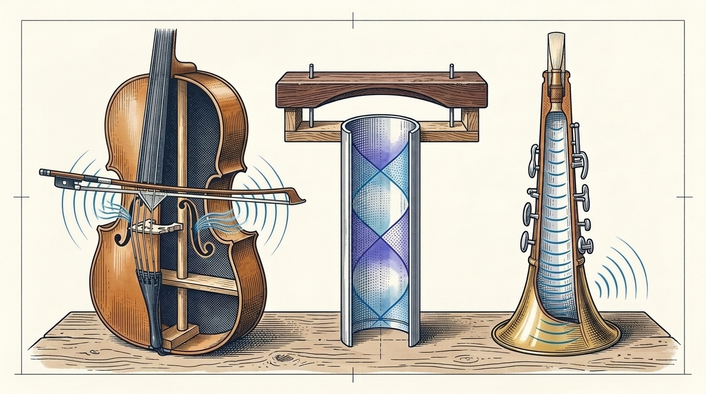
Three Coupled Acoustic Engines in One Studio: (Left) Bowed Helmholtz string + braced soundbox cavity; (Center) Parabolic undercut-tuned marimba bar + λ/4 standing-wave resonator tube; (Right) Keyed woodwind & flared brass bore waveguide.
2. The Inverse Luthier Tuner: One-Click Concert Pitch & Live Auditions
Select any solid body, string, pipe, or drum head in Mesh to open the Concert Pitch card in the Inspector. It shows the part's current musical note, cents deviation (e.g. A3 (in tune) · 220.0 Hz), and overtone ratio — and lets you switch its Sound role and tune physical dimensions automatically:
Instant Inspector Auditions (Tap, Pluck, Bow, Blow, Ring, Strike): Audition any part without even starting MuJoCo! Hold down Bow on a cello string while dragging Bow position β (sul ponticello ↔ sul tasto), Bow speed, and Bow force (or click Centre force in the wedge) to hear the timbre morph live; click Blow on a wind bore, Ring on a resonator tube, or Tap / Hard / Crash on a drum or gong.
Inverse Geometry & Tension Tuning: Pick a target concert note (from C1 to C7) and click Tune. On a solid marimba bar or chime, Mesh physically carves an underside parabolic arch or scales bar length to hit the exact Hz (with an optional checkbox to drill ∅2.2 mm cord holes at the 0.224·L nodal points where mounting pins won't deaden sustain!). On strings and drum heads it solves exact tension; on wind instruments and tubes it scales the bore air column.
One-Click 5-Note Pentatonic Sets: Select any tuned wooden or metal bar and click 5-Note Set — Mesh automatically clones and dimensionally tunes a complete 5-bar pentatonic scale beside it, ready for CNC routing or laser-cut frame mounting.
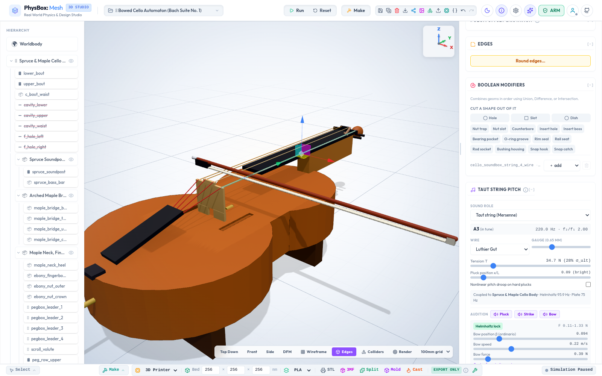
In Mesh4/4 Bowed Cello Automaton: 26.5 L spruce-and-maple corpus (fH ≈ 98 Hz at G2) with internal bass bar & soundpost, left-hand B3 stopping finger, and Schelleng bow-wedge readout. Built on BenchPhysical Luthier & Percussion Build: Graduated spruce soundbox plates, f-hole ports, and nodal-drilled rosewood marimba bars over brass λ/4 resonator tubes built from the tuned CAD dimensions.
3. From Acoustic Simulation to Real Hardwood, Brass & 3D Prints
1
Tune Soundholes & Plates First
Widen an f-hole or thin a Sitka spruce top plate by 0.5 mm in Mesh and watch the Soundbox cavity Helmholtz & top-plate Hz badges update live before touching expensive tonewood.
2
Export Undercut Bars & Bores
Send tuned marimba bars (with their 0.224·L nodal pin holes) to Carve / Relief CNC, unfold plywood soundbox frames into PhysBox Etch, or 3D-print custom microtonal wind bores in airtight PETG/SLA.
3
Drive Speakers from Volt
Building an electro-acoustic amp or active crossover? Click Link Mesh in PhysBox Volt to drive a Thiele-Small speaker cone inside your 3D ported Mesh cabinet directly from live SPICE amplifier currents!
PhysBox Mesh · Visualization 12 Min Read Level: Beginner
Photorealistic GPU Rendering & True-Scale 3D Backgrounds in Mesh
Turn any CAD assembly, draped garment, or simulated mechanism into a studio-lit product photograph in seconds using the viewport Render button and the six 3D Background worlds in the Environment settings menu — zero Blender export required.
1. Real-Time Viewport vs. Progressive 5-Bounce GPU Path Tracing
While you model Lattice cages, drag mechanisms, or run 60 fps MuJoCo simulations, Mesh draws with a fast rasterizer so every orbit and slider feels instantaneous. When you want to inspect real surface finish, glass refraction, brushed metal reflections, or showcase a finished design, click the Render button (aperture icon) in the floating toolbar at the bottom-right corner of the viewport:
Automatic Settle-and-Trace Workflow: You can leave Render switched on while framing your shot! Whenever you orbit the camera, move a part, or press Play, Mesh smoothly drops back to the crisp real-time view; the moment the view holds still (for ~0.35 s while paused), a background worker builds a BVH acceleration structure and progressively accumulates up to 512 multi-bounce path-traced samples right over the viewport before idling your GPU automatically.
True 5-Bounce Global Illumination, Glass & Glow: Light bounces five times across surfaces — bleeding warm wood tones onto undersides, refracting cleanly through translucent acrylic/glass parts, reflecting off turned brass and copper, casting realistic soft-edged area-light penumbras, and illuminating nearby objects from glowing emissive parts.
Outlier Despeckle + Edge-Preserving Denoiser: Each sample pass filters out single-pixel glossy fireflies and applies an edge-preserving bilateral denoiser with Neutral tone mapping, delivering clean photographic gradients in seconds without blurring crisp CAD chamfers.
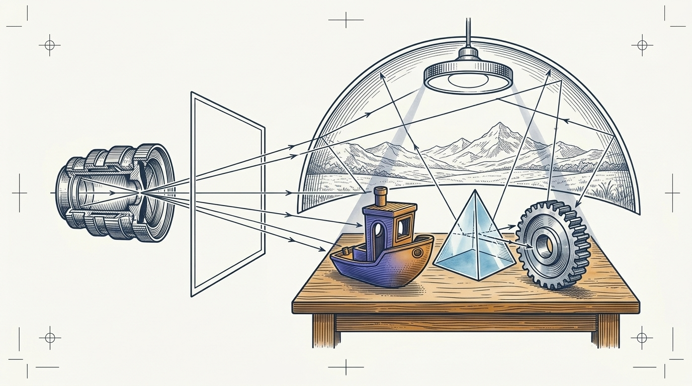
Inside Mesh's WebGL Path Tracer: An overhead disc area light and 360° HDR environment dome cast soft distance-accurate penumbras, 5-bounce indirect colour bleed, clear dielectric refraction, and metallic reflections into the viewport camera.
2. Choosing a 3D World: Settings (Gear Icon) → Background
Click the Settings gear icon in the top-right header to open the Environment menu, then pick from six curated presets under Background. Unlike flat 2D wallpaper images, Mesh's backgrounds are true-to-scale 3D worlds with matched equirectangular skyboxes, PBR normal-mapped surfaces, and physically tuned key-light softness:
Studio: Clean, distraction-free photo cyclorama floor with subtle contact shadows and sun-tight penumbras — ideal for technical documentation and white-background catalogue shots.
Lab / Workbench: Oiled butcher-block oak maker bench topped with a true-millimetre self-healing green ESD cutting mat, tool pegboard, and soft overhead LED shop-strip lighting — made for electronics enclosures, molds, and Benchy prints.
Cozy Coffee Table: Clear-coated mid-century American walnut coffee table over a woven rug and oak floorboards in a warm, sunlit living room — ideal for candles, porcelain slip-cast vases, and acoustic instruments.
Meadow & Mountains: Sunlit wildflower clearing or high-altitude granite outcrop overlooking snow-capped alpine peaks — great for drones, wind turbines, PVC structures, and outdoor gear.
Urban / Graffiti Wall: Textured concrete sidewalk in front of a painted brick alley wall with dramatic street-level lighting — built for skate carts, streetwear garments, and robotics.
Zero Interference with Physics, Clicks, or STL/3MF Exports
Every 3D background prop (the cutting mat, walnut tabletop, stones, walls) is purely visual and raycast-transparent: clicking the background still clears your selection cleanly, MuJoCo physics uses your exact floor settings, and exporting STLs, 3MFs, or molds ignores the scenery completely — while saving your scene preserves your chosen background automatically!
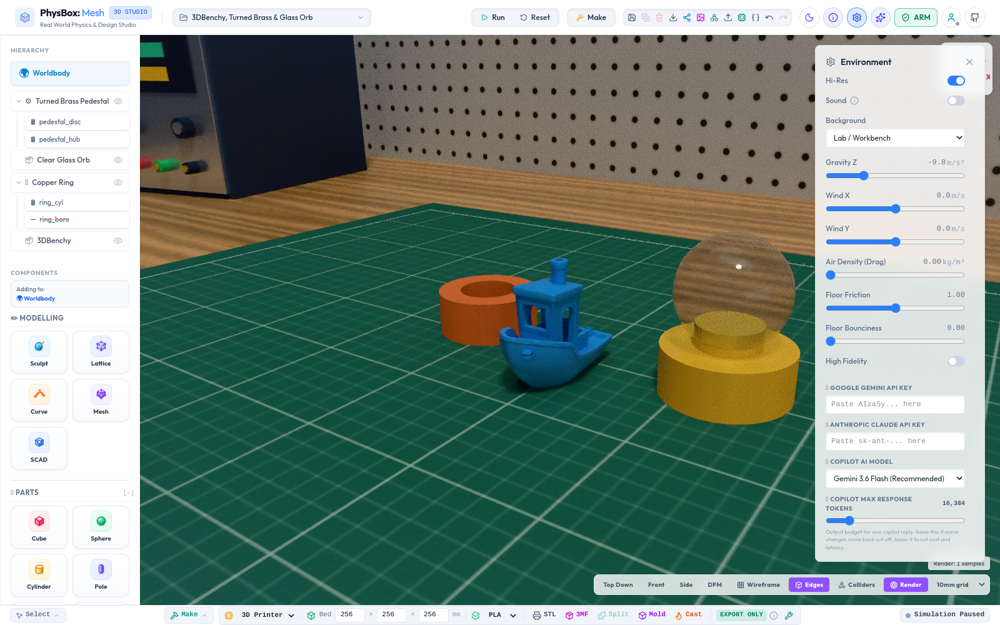
Setup in MeshEnvironment Menu + Render Toggle: Selecting Lab / Workbench under Settings → Background and clicking Render in the bottom-right bar to trace #3DBenchy, copper, brass, and clear glass on the ESD mat.
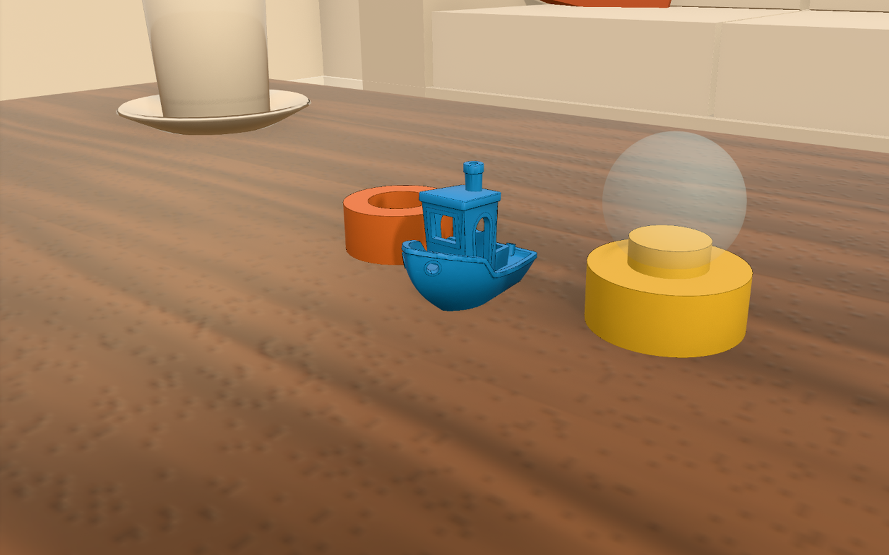
Path-Traced OutputFinished Render on Cozy Coffee Table: Switched to Cozy Coffee Table and converged in-browser — natural window penumbras, walnut clearcoat reflections, and refractive glass orb with zero external DCC tools.
3. Four Quick Composition & Material Tips for Hero Shots
1
Pause at the Best Action Frame
Press Play to let cloth drape, water splash, or mechanisms settle into a natural pose, hit Pause, and click Render to path-trace that exact physical instant.
2
Turn Off Wireframe & Overlays
Uncheck DFM, Colliders, and Edges in the bottom-right bar and click empty space to clear any selection highlight so surfaces trace with pure physical materials.
3
Mix Metals, Woods & Clear Glass
Lower a part's opacity slider to turn it into refractive clear glass/acrylic in Render mode, pair brushed metals with hardwood, or add subtle glow to LEDs so they cast real light onto the bench!
Expand Your Knowledge
Explore Other PhysBox Guides
Deepen your mastery across mixed-signal electronics, realtime HIL silicon, 3D parametric physics, and multi-sheet CNC/laser fabrication.
Foundry · Sand14 Min
Backyard Sand Casting from One-Piece Printed Patterns
Export a single STL with draft, alloy shrink, sprue, runner & Chvorinov riser already fused on, then ram Petrobond and pour.
Foundry · Investment16 Min
Lost-PLA Investment Casting & Kiln Burnout
Cast zero-draft organic sculptures with fused sprues/vents, hollow burnout slicer settings, and weighed investment flasks.
Ceramics · Plaster15 Min
Ceramic Slip Casting with Multi-Part Plaster Cases